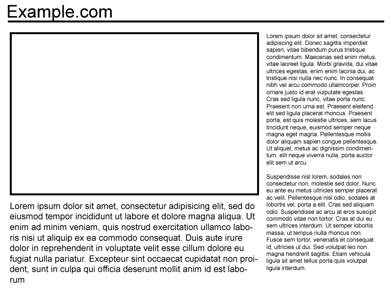
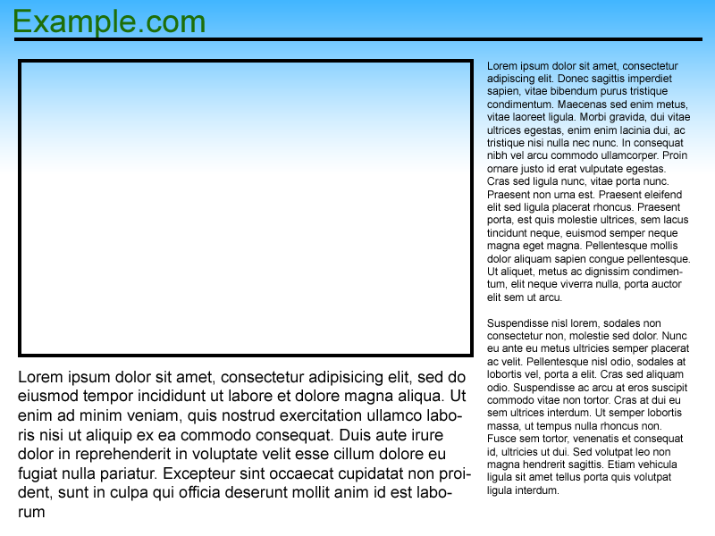

Your browser doesn't support the features required by impress.js, so you are presented with a simplified version of this presentation.
For the best experience please use the latest Chrome, Safari or Firefox browser.
Section 3
A --Very-- Brief Primer to the Internet
But before we can dive into this world of cyber warfare, first we must examine the medium within which it takes place. Indeed, we must first understand the internet.
Conceptually, all the internet is a series of connections between different computers using a set of protocols to request data in between those computers.
So when you request http://example.com/index.html, your computer sends a request to the computer at example.com for the homepage.
The server responds with an HTML file, which your computer interprets as an outline for the web page

additionally, the page tells the computer where it can find the other files to fill out the page, such as styles

When you go to a new page, the whole process repeats.